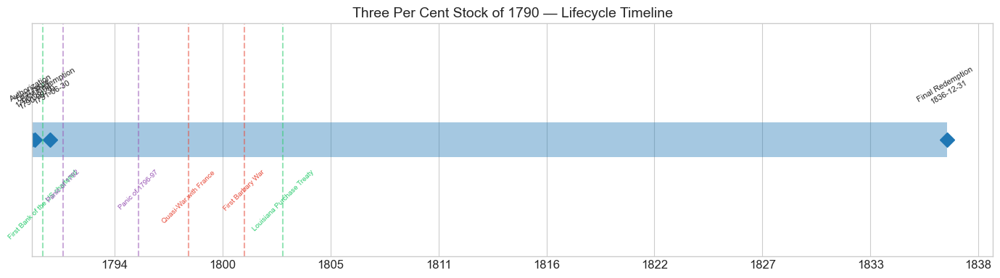
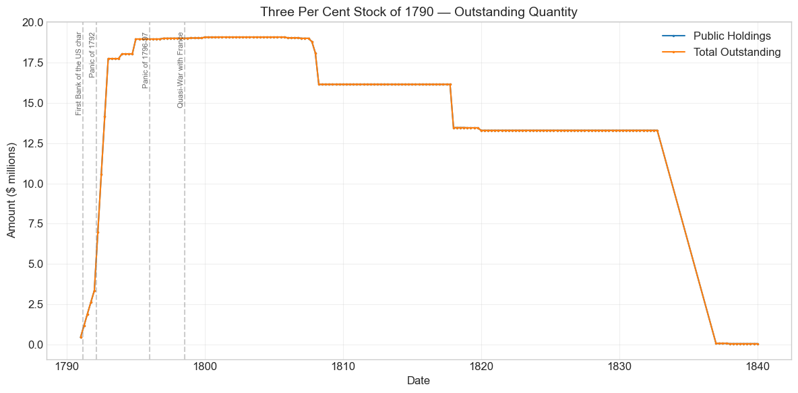
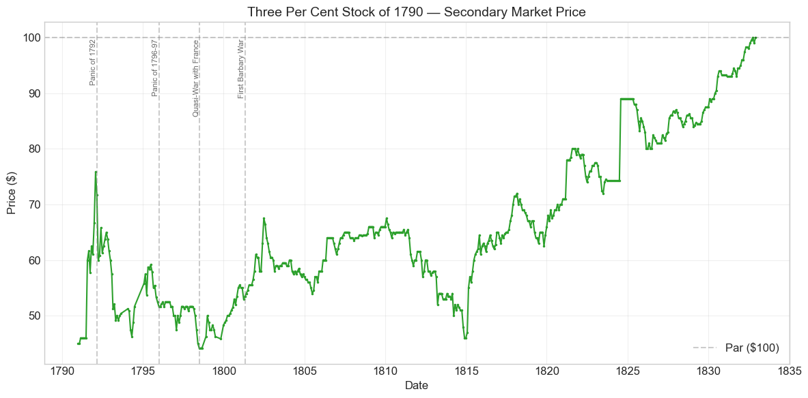
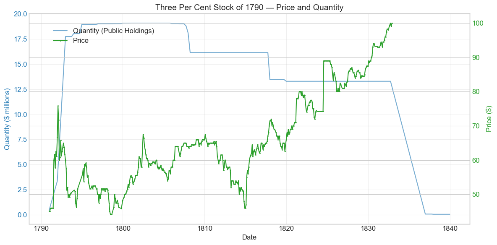
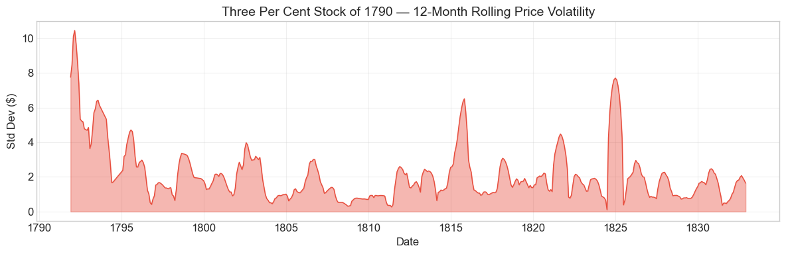
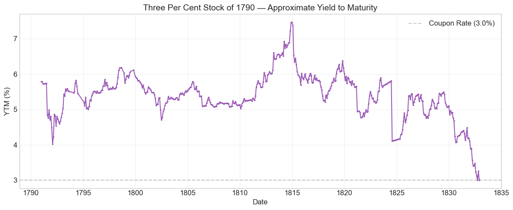

Bond Biography: Three Per Cent Stock of 1790#
The Long Shadow of the Revolution: Hamilton’s Three Per Cents#
An enhanced chapter from the Hall-Payne-Sargent US Federal Bond Database (2,857 issues, 1776–1960)
Bond ID (L1): 20023 | Category: Interest Bearing > Marketable > Long Term Bond
import pandas as pd
import numpy as np
import matplotlib.pyplot as plt
import matplotlib.patches as mpatches
import datetime
import warnings
warnings.filterwarnings('ignore')
plt.style.use('seaborn-v0_8-whitegrid')
plt.rcParams.update({'figure.figsize': (12, 6), 'font.size': 12,
'axes.titlesize': 14, 'axes.labelsize': 12})
# Load the bond database
store = pd.HDFStore('../data/BondDF.h5', mode='r')
BondList = store['BondList']
BondQuant = store['BondQuant']
BondPrice = store['BondPrice']
store.close()
BondQuant_T = BondQuant.transpose()
BondPrice_T = BondPrice.transpose()
bond_id = 20023
print(f'Loaded data for: Three Per Cent Stock of 1790 (ID: 20023)')
/Users/thomassargent/anaconda3/lib/python3.9/site-packages/pandas/core/arrays/masked.py:60: UserWarning: Pandas requires version '1.3.6' or newer of 'bottleneck' (version '1.3.5' currently installed).
from pandas.core import (
Loaded data for: Three Per Cent Stock of 1790 (ID: 20023)
A Debt “The Price of Liberty”#
In January 1790, the first Secretary of the Treasury of the United States rose to answer a question that had haunted the republic since Yorktown: what was to be done about the debts of the Revolution? The war had been financed by every improvisation a desperate government could devise — paper money that depreciated into worthlessness, loan office certificates, IOUs pressed on farmers and soldiers, foreign loans from France, Spain, and Dutch bankers. By the late 1780s the domestic debt of the Confederation government amounted to tens of millions of dollars in principal, plus a mountain of unpaid interest. Under the Articles of Confederation, Congress had no power to tax; interest went unpaid, and by the middle of the 1780s the government could not even service its foreign obligations. Certificates of the domestic debt traded at deep discounts — often at ten to twenty-five cents on the dollar — a daily, quotable measure of the government’s broken credit.
Alexander Hamilton’s Report Relating to a Provision for the Support of Public Credit, delivered to the House of Representatives on January 9, 1790, proposed to transform this chaos into a modern funded debt. The old certificates would be exchanged, at face value, for new federal securities backed by permanent revenues — chiefly the customs duties that the new Constitution empowered Congress to levy. “The debt of the United States,” Hamilton wrote, “was the price of liberty,” and honoring it in full — even in the hands of speculators who had bought certificates cheaply from original holders — was, in his view, the only way to establish the credit of the new government.
The result was the Funding Act of August 4, 1790, and the three securities it created: the Six Per Cent Stock (ID 20021), the Deferred Six Per Cent Stock (ID 20022, on which interest would not begin until 1801), and the subject of this chapter, the Three Per Cent Stock of 1790 (ID 20023). The three per cents played a distinctive role in the bargain. They were issued principally against the arrears of interest on the old domestic debt — the accumulated unpaid coupons of the Confederation era, which had circulated in the form of certificates known as indents of interest — and against a portion of the assumed state debts. Holders of back interest did not receive the full 6% the principal-holders got; instead, their claims were funded at par into a perpetual-style annuity paying 3% quarterly. It was, in effect, a negotiated haircut on the interest rate, dressed in the respectable clothing of a funded security.
What makes this bond’s story distinctive in the arc of U.S. fiscal history is its sheer longevity. With 488 monthly price observations stretching from December 1790 into the 1830s, the Three Per Cent Stock has the longest price series of any security in the Hall-Payne-Sargent database. It was quoted through the Panic of 1792, the Quasi-War with France, the Louisiana Purchase, the War of 1812, and the Era of Good Feelings, and it survived until the national debt itself was extinguished under Andrew Jackson. Its price history is very nearly a continuous electrocardiogram of the early republic’s credit.
The Grand Bargain of 1790#
The Funding Act did not pass easily. Two questions divided Congress bitterly.
Discrimination. James Madison proposed to discriminate between original holders of the debt — the soldiers and farmers who had been paid in certificates — and the speculators who had bought those certificates at a fraction of face value. Hamilton opposed discrimination as administratively impossible and destructive of the negotiability on which a funded debt depended. Hamilton won: certificates were funded at face value to whoever presented them.
Assumption. Hamilton also proposed that the federal government assume the remaining war debts of the states — some $21.5 million was ultimately authorized. Southern states that had largely paid down their debts, Virginia foremost, objected to being taxed to pay the debts of laggard states. Assumption was defeated in the House in April 1790, and for a time the whole funding program hung in the balance. The impasse was broken by the most famous dinner party in American fiscal history: at a meal arranged by Thomas Jefferson in June 1790, Madison agreed to let assumption pass (by softening opposition, not by voting for it), and in exchange Hamilton’s allies supported placing the permanent national capital on the Potomac, with a temporary decade in Philadelphia. The Residence Act and the Funding Act passed within weeks of each other in July and August 1790.
The exchange terms. Under the Act, subscribers to the new federal loan exchanged their old securities on fixed terms:
Principal of the domestic debt: each $100 became two-thirds ($66.67) in 6% stock and one-third ($33.33) in deferred 6% stock, on which interest began only in 1801.
Arrears of interest (indents): funded dollar-for-dollar into 3% stock — this bond.
Assumed state debts: each $100 became four-ninths in 6% stock, two-ninths in deferred stock, and three-ninths in 3% stock.
The blended effective interest rate across the package was close to 4% — a substantial economy compared with the 6% the old certificates had nominally promised, achieved without a formal default. Contemporaries understood the arithmetic perfectly well; the market simply priced the 3% stock at a discount deep enough to bring its yield into line with the 6s. Hamilton had, in modern language, executed a market-friendly debt restructuring.
Historical Context#
The following major events occurred during this bond’s lifetime:
Date |
Event |
Category |
|---|---|---|
1791-02-25 |
First Bank of the US chartered |
Legislation |
1792-03-01 to 1792-04-30 |
Panic of 1792 |
Crisis |
1796-01-01 to 1797-12-31 |
Panic of 1796-97 |
Crisis |
1798-07-07 to 1800-09-30 |
Quasi-War with France |
War |
1801-05-10 to 1805-06-10 |
First Barbary War |
War |
1803-04-30 |
Louisiana Purchase Treaty |
Legislation |
1803-12-20 |
Louisiana Territory transferred to US |
Other |
1811-03-03 |
First Bank charter expires |
Legislation |
1812-06-18 to 1815-02-18 |
War of 1812 |
War |
1814-08-24 |
British burn Washington, D.C. |
Other |
1814-12-24 |
Treaty of Ghent (War of 1812 ends) |
Other |
1816-04-10 |
Second Bank of the US chartered |
Legislation |
1819-01-01 to 1821-12-31 |
Panic of 1819 |
Crisis |
1836-03-03 |
Second Bank charter expires |
Legislation |
The Panic of 1792: America’s First Market Crash#
The new funded securities, together with scrip of the newly chartered First Bank of the United States, ignited the young republic’s first speculative mania. Through the summer of 1791 and the winter of 1791–92 prices of the 6s, the deferred stock, and the 3s ran up sharply — the data show the three per cents spiking more than 30% in July 1791 alone, the month of the frenzied initial subscription to Bank scrip (“scripomania”). At the center of the boom stood William Duer, a former Assistant Secretary of the Treasury, who with partners borrowed enormously to corner 6% stock and Bank shares. When Duer’s pyramid of obligations collapsed in March 1792, he was carried to debtors’ prison and securities prices broke violently — the 3s fell back from their January 1792 peak, which the price series records as the start of the bond’s maximum drawdown of -41.8%.
Hamilton’s response has earned him a reputation, in the account of Sylla, Wright, and Cowen (2009), as a proto-central banker: he directed open-market purchases of government stock through the sinking fund commissioners, encouraged banks to keep lending against government securities as collateral at a haircut, and helped confine the panic to a matter of weeks. The episode mattered enormously for this bond: it demonstrated that the Treasury would act to stabilize the market for its own debt.
The Panic of 1796–97 and the Quasi-War#
The later 1790s were unkind to the three per cents. The Panic of 1796–97 — a credit contraction transmitted from Britain (where the Bank of England suspended specie payments in February 1797) and aggravated by the collapse of American land-speculation schemes, most spectacularly that of Robert Morris — depressed asset prices generally. On its heels came the Quasi-War with France (1798–1800), an undeclared naval conflict that forced the government to rearm, create the Navy Department, and borrow at 8% (the famous Eight Per Cent Loans of 1798 and 1800, also in this database). With the government’s own new money costing 8%, an old 3% annuity had to be cheap: the three per cents touched their all-time low of $44.17 in June 1798, the very month war fever peaked. A 3% coupon on a price of roughly $44 implied a running yield near 6.8% — the market’s price for French frigates and fiscal strain.
Peace, Gallatin, and the Barbary Interlude#
The Convention of 1800 ended the Quasi-War, and Jefferson’s Treasury Secretary Albert Gallatin devoted the following decade to debt reduction, shrinking the federal debt from roughly $83 million in 1801 to about $45 million by 1812 even while absorbing the $11.25 million Louisiana Purchase stock. The First Barbary War (1801–1805) was a modest naval expense that left federal credit essentially untouched. For the three per cents these were quiet, gently improving years: prices recovered from their late-1790s trough into the $50s and $60s, tracking the general decline in yields on U.S. stock.
The War of 1812#
War with Britain reversed a decade of fiscal consolidation. The federal debt nearly tripled to about $127 million by 1815-16; the government was forced to borrow at deepening discounts, the Treasury effectively lost the ability to move funds around the country after the First Bank’s charter lapsed in 1811, and in the autumn of 1814 — after the burning of Washington — banks outside New England suspended specie payments. Holders of the old 3s felt all of it: prices sagged back into the low $50s and $40s range during the war years as new 6% war loans sold below par crowded the market. Recovery followed the Treaty of Ghent, and the postwar years under the Second Bank of the United States saw the three per cents begin a long, slow climb that would end, decades later, at par.
# Bond Lifecycle Timeline
fig, ax = plt.subplots(figsize=(14, 4))
# Key dates
dates = [('Authorization', '1790-08-04'), ('First Issue', '1790-09-30'), ('First Redemption', '1791-06-30'), ('Final Redemption', '1836-12-31')]
events = [('First Bank of the US chartered', '1791-02-25', 'legislation'), ('Panic of 1792', '1792-03-01', 'crisis'), ('Panic of 1796-97', '1796-01-01', 'crisis'), ('Quasi-War with France', '1798-07-07', 'war'), ('First Barbary War', '1801-05-10', 'war'), ('Louisiana Purchase Treaty', '1803-04-30', 'legislation')]
import matplotlib.dates as mdates
from datetime import datetime
# Plot bond lifetime bar
d0 = datetime.strptime(dates[0][1], '%Y-%m-%d')
d1 = datetime.strptime(dates[-1][1], '%Y-%m-%d')
ax.barh(0, (d1 - d0).days, left=mdates.date2num(d0), height=0.3,
color='#1f77b4', alpha=0.4, label='Bond Lifetime')
# Mark key dates
for label, date_str in dates:
d = datetime.strptime(date_str, '%Y-%m-%d')
ax.plot(mdates.date2num(d), 0, 'D', color='#1f77b4', markersize=10)
ax.annotate(f'{label}\n{date_str}', (mdates.date2num(d), 0.25),
ha='center', va='bottom', fontsize=8, rotation=30)
# Mark historical events
colors = {'war': '#e74c3c', 'crisis': '#9b59b6', 'legislation': '#2ecc71', 'other': '#95a5a6', 'monetary': '#f39c12'}
for name, date_str, cat in events:
d = datetime.strptime(date_str, '%Y-%m-%d')
ax.axvline(mdates.date2num(d), color=colors.get(cat, 'gray'), alpha=0.5, linestyle='--')
ax.annotate(name, (mdates.date2num(d), -0.25), ha='center', va='top',
fontsize=7, rotation=45, color=colors.get(cat, 'gray'))
ax.set_yticks([])
ax.xaxis.set_major_formatter(mdates.DateFormatter('%Y'))
ax.set_title('Three Per Cent Stock of 1790 — Lifecycle Timeline')
ax.set_ylim(-1, 1)
plt.tight_layout()
plt.show()

Bond Features#
Feature |
Detail |
|---|---|
Name |
Three Per Cent Stock of 1790 |
Authorizing Act |
August 4, 1790 (the Funding Act) |
First Issue Date |
September 30, 1790 |
Term |
Indefinite — no stated maturity |
First Redemption |
June 30, 1791 |
Final Redemption |
December 31, 1836 |
Coupon Rate |
3.0% per annum |
Payment Frequency |
Quarterly (4 times/year) |
Callable |
Redeemable at the pleasure of the government |
Payable in Coin |
Yes |
Origin |
Funded arrears of interest (indents) and one-third of assumed state debts |
Two features deserve emphasis. First, the stock had no maturity date: like a British consol, it was an annuity that the government could redeem whenever it chose, and unlike the companion 6% stocks its redemption was not restricted by the Funding Act’s famous limitation (the 6s could be paid off at a rate of no more than 8% of the original sum per year, principal and interest included). Second, interest was paid quarterly in specie, at the Treasury or at the loan offices maintained in each state — a payment infrastructure that, together with transferability by book entry, made the funded debt of 1790 one of the earliest recognizably modern government securities systems anywhere.
# Display full bond features from database
row = BondList.loc[20023]
display_cols = [
"Treasury's Name Of Issue", 'Authorizing Act', 'Term Of Loan',
'First Issue Date', 'First Redemption Date', 'Final Redemption Date',
'Coupon Rate', 'Coupons Per Year', 'Callable', 'Coin',
'Authorized Amount', 'Price Sold'
]
print('Bond Features from Database:')
print('=' * 55)
for col in display_cols:
if col in row.index:
print(f' {col:<30} {row[col]}')
Bond Features from Database:
=======================================================
Treasury's Name Of Issue Three Per Cent Stock of 1790
Authorizing Act August 4, 1790
Term Of Loan indefinite
First Issue Date 1790-09-30 00:00:00
First Redemption Date 1791-06-30 00:00:00
Final Redemption Date 1836-12-31 00:00:00
Coupon Rate 3.0
Coupons Per Year 4.0
Callable 0.0
Coin 1.0
Authorized Amount nan
Price Sold 1.0
Bond Quantity Over Time#
The bond’s outstanding quantity peaked at $19.09 million on December 31, 1804. Quantity data span 1790 to 1839 (181 monthly observations).
# Bond quantity over time
fig, ax = plt.subplots(figsize=(12, 6))
for stype in ['Public Holdings', 'Total Outstanding']:
try:
s = BondQuant_T.loc[(20023, stype)]
s = s[s.notna()]
if len(s) > 0:
ax.plot(s.index, s.values / 1e6, marker='.', markersize=3, linewidth=1.5, label=stype)
except KeyError:
pass
ax.set_title('Three Per Cent Stock of 1790 — Outstanding Quantity')
ax.set_xlabel('Date')
ax.set_ylabel('Amount ($ millions)')
ax.legend()
ax.grid(True, alpha=0.3)
events = {'1791-02-25': 'First Bank of the US char', '1792-03-01': 'Panic of 1792', '1796-01-01': 'Panic of 1796-97', '1798-07-07': 'Quasi-War with France'}
for date_str, label in events.items():
d = pd.Timestamp(date_str)
ax.axvline(d, color='gray', alpha=0.4, linestyle='--')
ax.text(d, ax.get_ylim()[1]*0.97, label, rotation=90, va='top', ha='right', fontsize=8, alpha=0.7)
plt.tight_layout()
plt.show()

Quantity Analysis#
The issuance pattern of the three per cents mirrors the administrative rollout of the funding program rather than any market placement. The stock was not “sold” for cash: it was exchanged for old evidences of debt. Subscriptions to the loan opened in the autumn of 1790 at the Treasury and the state loan offices, and the outstanding quantity climbed in steps through 1791 and 1792 — the data show jumps of +171.5% in March 1791 and +63.2% in June 1791 — as successive waves of certificate holders came in, as the assumed state debts were funded, and as Congress repeatedly extended the subscription deadline for stragglers. Later additions came from the funding of remaining unsubscribed debt in the mid-1790s, which carried the total upward until it plateaued near $19 million in the early 1800s.
Redemption ran the other way, and slowly. Because the 3s carried the cheapest coupon in the government’s book, they were the last debt any rational Treasury would retire while 6% and 8% obligations remained outstanding — buying back a 3% annuity trading near $50–60 was simply a worse bargain than paying off 6s at par. Gallatin’s sinking-fund purchases and the conversion operations of 1807 and 1812 therefore concentrated on the sixes and deferred sixes, and the three per cents’ outstanding quantity stayed on a high plateau through the 1810s while its 1790 siblings were being extinguished. Only in the final act — the general extinguishment of the national debt in the early 1830s under Jackson, when nothing more expensive remained — did the Treasury turn to the 3s, redeeming the stock at par and driving the quantity to zero. Congress had also, over the years, allowed limited voluntary exchanges of 3% stock into other instruments, but most of the issue simply waited out four decades for its money.
Secondary Market Prices#
Overall Statistics (1790-12-31 to 1832-11-30): Mean $66.39, Range $44.17–$100.0, Std Dev $13.67, 488 observations.
By Period:
Period |
Mean |
Std |
Min |
Max |
Obs |
|---|---|---|---|---|---|
Issue to First Redemption (1790-09 to 1791-06) |
$45.71 |
$0.49 |
$45.0 |
$46.0 |
7 |
First Redemption to Final Redemption (1791-06 to 1836-12) |
$66.65 |
$13.55 |
$44.17 |
$100.0 |
482 |
The most important fact about this price series is the one a modern reader is most likely to misread: the deep, persistent discount to par was not a verdict of distrust. A perpetual 3% annuity in a world of roughly 6% yields is worth about fifty cents on the dollar; at $45–50 the three per cents were priced almost exactly consistently with the near-par prices of the 6% stock. The discount was arithmetic, not anxiety. What moved the price around that baseline — the 1791–92 bubble, the 1798 trough, the wartime sags, the long climb to $100 as redemption at par approached in the early 1830s — is where the history lives.
# Annotated price chart
fig, ax = plt.subplots(figsize=(12, 6))
s = BondPrice_T.loc[(20023, 'Average')]
s = pd.to_numeric(s, errors='coerce').dropna()
if len(s) > 0:
ax.plot(s.index, s.values, marker='.', markersize=3, linewidth=1.5, color='#2ca02c')
ax.axhline(100, color='black', alpha=0.2, linestyle='--', label='Par ($100)')
ax.set_title('Three Per Cent Stock of 1790 — Secondary Market Price')
ax.set_xlabel('Date')
ax.set_ylabel('Price ($)')
ax.legend()
ax.grid(True, alpha=0.3)
events = {'1792-03-01': 'Panic of 1792', '1796-01-01': 'Panic of 1796-97', '1798-07-07': 'Quasi-War with France', '1801-05-10': 'First Barbary War'}
for date_str, label in events.items():
d = pd.Timestamp(date_str)
ax.axvline(d, color='gray', alpha=0.4, linestyle='--')
ax.text(d, ax.get_ylim()[1]*0.97, label, rotation=90, va='top', ha='right', fontsize=8, alpha=0.7)
plt.tight_layout()
plt.show()

# Price and Quantity — dual-axis chart
fig, ax1 = plt.subplots(figsize=(12, 6))
# Quantity (left axis)
for stype in ['Public Holdings', 'Total Outstanding']:
try:
q = BondQuant_T.loc[(20023, stype)]
q = q[q.notna()]
if len(q) > 0:
ax1.plot(q.index, q.values / 1e6, color='#1f77b4', alpha=0.6, label=f'Quantity ({stype})')
break
except KeyError:
pass
ax1.set_xlabel('Date')
ax1.set_ylabel('Quantity ($ millions)', color='#1f77b4')
ax1.tick_params(axis='y', labelcolor='#1f77b4')
# Price (right axis)
ax2 = ax1.twinx()
p = BondPrice_T.loc[(20023, 'Average')]
p = pd.to_numeric(p, errors='coerce').dropna()
if len(p) > 0:
ax2.plot(p.index, p.values, color='#2ca02c', marker='.', markersize=2, label='Price')
ax2.set_ylabel('Price ($)', color='#2ca02c')
ax2.tick_params(axis='y', labelcolor='#2ca02c')
ax1.set_title('Three Per Cent Stock of 1790 — Price and Quantity')
ax1.grid(True, alpha=0.3)
fig.legend(loc='upper left', bbox_to_anchor=(0.1, 0.9))
plt.tight_layout()
plt.show()

Detected Price/Quantity Events#
The following significant movements were auto-detected:
Date |
Type |
Change |
Explanation |
|---|---|---|---|
1791-03 |
quantity_increase |
+171.5% |
Funding mechanics, not markets: a large tranche of indents and assumed state debt was converted into new 3% stock as subscriptions were recorded at the loan offices. |
1791-06 |
quantity_increase |
+63.2% |
Continued subscription of old certificates into the new funded stock. |
1791-07 |
price_spike |
+30.4% |
Scripomania. The initial public offering of First Bank of the United States scrip on July 4, 1791 was wildly oversubscribed, and the enthusiasm spilled into all government stock. The 3s, the cheapest way to buy exposure to U.S. credit, jumped hardest. |
1791-09 |
price_drop |
-6.4% |
The August–September 1791 mini-crash, when Bank scrip prices broke; Hamilton and the sinking fund made stabilizing purchases of government stock. |
1791-10 to 1792-01 |
price_spikes |
+8.2% to +13.7% |
The Duer boom. William Duer and his associates, borrowing at usurious rates, bid up government securities through the winter; the 3s reached their pre-1820s peak in January 1792. |
1792-02 onward |
price_drop |
-5.5%… |
The unraveling. Duer’s failure in early March 1792 set off the Panic of 1792; from the January 1792 peak the long slide began that would ultimately reach -41.8% at the June 1798 Quasi-War trough. |
The causal chain in 1791–92 is well documented (Davis 1917; Sylla, Wright & Cowen 2009): easy credit from the newly opened Bank of the United States fed a leveraged long position concentrated in a few hands; when the Bank contracted and Duer’s private paper was protested, forced liquidation hit exactly the securities shown in this chart. The three per cents were a favorite vehicle of the speculators precisely because their low price gave the most face-value exposure per dollar.
Price Volatility#
Maximum drawdown: -41.8% (from the speculative peak of January 31, 1792 to the Quasi-War trough of June 30, 1798)
Average monthly return: 0.210%
The volatility profile is front-loaded. The wildest months of the bond’s forty-year life all occur in 1791–92, during the scrip bubble and the Panic; a second ridge of volatility accompanies the Quasi-War alarm of 1798 and another the War of 1812. From the 1820s onward the series goes progressively quiet as the bond converges toward its redemption value — a textbook picture of a security’s risk dying out as its terminal date approaches.
# Rolling volatility (12-month window)
p = BondPrice_T.loc[(20023, 'Average')]
p = pd.to_numeric(p, errors='coerce').dropna()
if len(p) >= 12:
rolling_std = p.rolling(window=12).std().dropna()
fig, ax = plt.subplots(figsize=(12, 4))
ax.fill_between(rolling_std.index, rolling_std.values, alpha=0.4, color='#e74c3c')
ax.plot(rolling_std.index, rolling_std.values, color='#e74c3c', linewidth=1)
ax.set_title('Three Per Cent Stock of 1790 — 12-Month Rolling Price Volatility')
ax.set_xlabel('Date')
ax.set_ylabel('Std Dev ($)')
ax.grid(True, alpha=0.3)
plt.tight_layout()
plt.show()
else:
print('Insufficient data for rolling volatility (need >= 12 observations)')

Approximate Yield to Maturity#
Because the Three Per Cent Stock had no contractual maturity, a conventional yield to maturity is not strictly defined for most of its life; the calculation below treats the final redemption date (December 31, 1836) as the terminal date, which is reasonable only for the later decades. For the early decades the more meaningful number is the current yield — the 3% coupon divided by the price — which at a price of $50 is 6%, right in line with the yields on the companion 6% stocks. The convergence of the computed YTM toward the coupon rate in the 1820s–30s reflects the price’s climb to par as redemption approached.
# Approximate Yield to Maturity
p = BondPrice_T.loc[(20023, 'Average')]
p = pd.to_numeric(p, errors='coerce').dropna()
final_redemption = pd.Timestamp('1836-12-31')
coupon_rate = 3.0
ytm_values = []
ytm_dates = []
for date, price in p.items():
years_left = (final_redemption - date).days / 365.25
if years_left > 0 and price > 0:
ytm = (coupon_rate + (100 - price) / years_left) / ((100 + price) / 2) * 100
ytm_values.append(ytm)
ytm_dates.append(date)
if ytm_values:
fig, ax = plt.subplots(figsize=(12, 5))
ax.plot(ytm_dates, ytm_values, color='#9b59b6', marker='.', markersize=3, linewidth=1.5)
ax.axhline(3.0, color='black', alpha=0.2, linestyle='--', label=f'Coupon Rate ({coupon_rate}%)')
ax.set_title('Three Per Cent Stock of 1790 — Approximate Yield to Maturity')
ax.set_xlabel('Date')
ax.set_ylabel('YTM (%)')
ax.legend()
ax.grid(True, alpha=0.3)
plt.tight_layout()
plt.show()
else:
print('Could not compute YTM')

Issuance, Distribution, and Redemption#
How it was placed. The Three Per Cent Stock was never marketed in the modern sense — no underwriters, no offering price. It was created by conversion: holders of indents of interest and of assumed state-debt certificates subscribed them at the Treasury or at a state loan office and received book-entry 3% stock at par of their claim. The “Price Sold” of 1.0 (par) in the database records this exchange-at-face-value, not a cash sale.
Who held it. The initial holders were whoever held the old paper on subscription day: original creditors — veterans, farmers, merchants who had supplied the army — alongside the speculators who had bought certificates at a discount during the 1780s and in the anticipatory scramble of 1789–90. Ownership then evolved. The funded debt became a favored asset of banks and insurance companies, of trustees and estates, and, importantly, of foreign investors: Dutch and British holders accumulated a substantial fraction of the U.S. funded debt during the 1790s and early 1800s, transferring stock on the Treasury’s books through American agents. The stock was transferable at the Treasury and loan offices, and quotations appeared continuously in the Philadelphia, New York, Boston, and Baltimore papers — the raw material of the price series plotted above.
How it ended. Redeemable “at the pleasure of the government,” the 3s nonetheless waited longest. Priorities ran from expensive debt to cheap: the 8% loans of the Quasi-War went first, then the various 6s through purchase, conversion (the Exchanged and Converted 6s of 1807 and 1812), and redemption. Under Monroe, Adams, and finally Jackson, surplus revenues from tariffs and land sales ground the remaining debt down, and in the early 1830s the Treasury gave notice and paid off the old three per cents at par in coin. The climb of the market price to exactly $100.0 at the end of the series is the market pricing in that certainty. By January 1835 the United States had, uniquely among major nations then or since, extinguished its national debt entirely; the last small balances associated with unclaimed stock account for the final redemption date of December 31, 1836 recorded in the database.
Implications and Legacy#
The precedent of full faith and credit. The Three Per Cent Stock embodied the harder half of Hamilton’s bargain. Funding the principal of the old debt at 6% was generous; funding forty million dollars of claims — arrears and state debts — at 3% was the concession that made the program fiscally feasible. That the market accepted the package, and within a few years priced U.S. stock on terms comparable to the debt of long-established European states, vindicated Hamilton’s central claim: a government that services its debt punctually can restructure on tough terms once and still command credit. The 3s paid their quarterly coupon in specie without interruption for more than forty years, through two wars and three panics.
A fiscal shock absorber. Because the 3s were perpetual and cheap to service, they functioned as the stable base of the debt structure while more expensive layers were added and stripped away above them — 8% loans in the Quasi-War, 6% and 7% loans in the War of 1812. The bond’s price series thus records each crisis twice: directly, in its own dips, and indirectly, in the spreads at which the government’s new borrowing had to be done while the old 3s sat immovable on the books.
A window on early American finance. For the historian of markets, the 3s are a gift. Their forty-two years of continuous quotations — the longest single price series in this database — let researchers trace the term structure of early U.S. interest rates, measure the market’s reaction to the Panic of 1792 (the first test of American crisis management), and observe a sovereign yield curve being born. It is no accident that studies of Hamilton’s system, from Bayley’s 1881 compilation to modern work by Sylla, Wright, and Cowen and by Hall and Sargent, return again and again to this security.
Anecdotes worth remembering. The bond’s early history is inseparable from William Duer, whose leveraged bets on government stock made him the first man to crash an American financial market and who died in debtors’ prison in 1799. It is inseparable, too, from the dinner table at which Jefferson, Madison, and Hamilton traded the site of the capital for the assumption of state debts — meaning that a holder of Virginia war certificates in 1790 received, in part, this very 3% stock, and the nation received Washington, D.C. And its end belongs to Andrew Jackson, who loathed debt as a moral evil and had the satisfaction, almost unique in fiscal history, of paying off the last of it — including the last of Hamilton’s three per cents, the final living instrument of the funding system Jackson’s own party had been founded to oppose.
References#
Primary Sources#
Hamilton, A. (1790). Report Relating to a Provision for the Support of Public Credit, communicated to the House of Representatives, January 9, 1790.
U.S. Congress, An Act making provision for the (payment of the) Debt of the United States (the Funding Act), August 4, 1790, 1 Stat. 138.
U.S. Treasury Department, annual reports of the Secretary of the Treasury and of the Commissioners of the Sinking Fund, 1790s–1830s.
Scholarly Works#
Sylla, R., Wright, R. E. & Cowen, D. J. (2009). “Alexander Hamilton, Central Banker: Crisis Management during the U.S. Financial Panic of 1792.” Business History Review 83(1): 61–86.
Davis, J. S. (1917). Essays in the Earlier History of American Corporations. Cambridge: Harvard University Press.
Garber, P. M. (1991). “Alexander Hamilton’s Market-Based Debt Reduction Plan.” Carnegie-Rochester Conference Series on Public Policy 35: 79–104.
Sylla, R. (1998). “U.S. Securities Markets and the Banking System, 1790–1840.” Federal Reserve Bank of St. Louis Review 80(3): 83–98.
Hall, G. J. & Sargent, T. J. (2014). “Fiscal Discriminations in Three Wars.” Journal of Monetary Economics 61: 148–166.
Hall, G. J. & Sargent, T. J. (2018). “Brief History of US Debt Limits Before 1939.” Proceedings of the National Academy of Sciences 115(12): 2942–2945.
Payne, J., Szőke, B., Hall, G. & Sargent, T. (2025). Quarterly Journal of Economics.
General Histories#
Bayley, R. A. (1881). The National Loans of the United States, From July 4, 1776 to June 30, 1880. Washington: Government Printing Office.
Dewey, D. R. (1918). Financial History of the United States. New York: Longmans, Green and Co.
Studenski, P. & Krooss, H. E. (1952). Financial History of the United States. New York: McGraw-Hill.
Perkins, E. (1994). American Public Finance and Financial Services, 1700–1815. Columbus: Ohio State University Press.
Ferguson, E. J. (1961). The Power of the Purse: A History of American Public Finance, 1776–1790. Chapel Hill: University of North Carolina Press.
Chernow, R. (2004). Alexander Hamilton. New York: Penguin Press.
Enhanced Bond Biography generated from the Hall-Payne-Sargent Bond Database. Narrative enrichment draws on Ferguson (1961), Sylla, Wright & Cowen (2009), Bayley (1881), Studenski & Krooss (1952), and Perkins (1994).